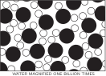
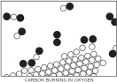
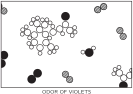

1. Атомы в движении 1
1–1 Введение#
Этот двухгодичный курс физики рассчитан на то, что вы, читатель, собираетесь стать физиком. Положим, это не так уж обязательно, но какой преподаватель не надеется на это! Если вы и впрямь хотите быть физиком, вам придется много поработать. Как-никак, а двести лет бурного развития самой мощной области знания что-нибудь да значат! Такое обилие материала, пожалуй, и не усвоишь за четыре года; вслед за этим нужно еще прослушать специальные курсы.
И все же, как ни удивительно, несмотря на колоссальный объем работы, проделанной за все это время, удается в значительной мере сконденсировать эту огромную массу результатов — то есть найти законы, подытоживающие все наши знания. Однако и законы эти так нелегко усвоить, что просто нечестно по отношению к вам было бы начинать изучение этого трудного предмета без какой-нибудь схемы или очерка взаимосвязи одних частей науки с другими. Поэтому вслед за этими вводными замечаниями первые три главы дадут очерк связи физики с остальными науками, отношения наук друг к другу и значения науки вообще, чтобы помочь нам «ощутить» предмет.
Вы спросите: почему бы сразу, на первой же странице, не привести основные законы, а после только показывать, как они работают во всех возможных условиях, как мы поступаем в евклидовой геометрии, где формулируют аксиомы, а потом делают всевозможные выводы? (Что, не желая изучать физику за четыре года, вы хотите выучить ее за четыре минуты?) Сделать это таким способом невозможно по двум причинам. Во-первых, нам известны еще не все основные законы: границы нашего незнания все расширяются. Во-вторых, правильная формулировка законов физики связана со многими весьма непривычными идеями, требующими для своего описания сложной математики. Поэтому нужна немалая предварительная подготовка только для того, чтобы понять, что означают эти слова. Нет, сделать это таким способом невозможно. Мы можем двигаться только постепенно, шаг за шагом.
Каждая часть, или доля, всей природы — это всегда лишь приближение к полной истине или к полной истине, насколько мы ее знаем. В самом деле, все, что мы знаем, — это какое-то приближение, ибо мы знаем, что еще не все законы нам известны. Поэтому все приходится изучать лишь для того, чтобы снова от этого отказаться или, что более вероятно, внести исправления.
Принцип науки, почти что ее определение, состоит в следующем: пробный камень всех наших знаний — это опыт. Опыт — единственный судья научной «истины». Но в чем же источник знаний? Откуда приходят те законы, которые мы проверяем? Да из самого опыта; он помогает нам создавать эти законы в том смысле, что дает нам намеки. Но нужно также и воображение, чтобы на основе этих намеков создать великие обобщения — угадать чудесные, простые, но очень странные закономерности, лежащие в их основе, а затем поставить опыт, чтобы снова проверить, правильную ли догадку мы сделали. Этот процесс воображения настолько труден, что в физике происходит разделение труда: есть физики-теоретики, которые воображают, делают выводы и отгадывают новые законы, но опытов не ставят; и есть физики-экспериментаторы, которые ставят опыты, воображают, делают выводы и отгадывают.
Мы сказали, что законы природы — это приближения; сперва открывают «неправильные» законы, а потом уж — «правильные». Но как опыт может быть «неверным»? Ну, во-первых, по самой простой причине: когда в ваших приборах что-то неладно, а вы этого не замечаете. Но такую ошибку легко уловить, надо лишь все проверять и проверять. Ну, а если не придираться к мелочам, могут ли все-таки результаты опыта быть ошибочными? Могут, из-за нехватки точности. Например, масса предмета кажется неизменной; вращающийся волчок весит столько же, сколько лежащий на месте. Вот вам и готов «закон»: масса постоянна и от скорости не зависит. Но этот «закон», как выясняется, неверен. Оказалось, что масса с увеличением скорости растет, но только для заметного роста нужны скорости, близкие к световой. Правильный закон таков: если скорость предмета меньше 100 миль/сек, масса с точностью до одной миллионной постоянна. Вот примерно в такой приближенной форме этот закон верен. Можно подумать, что практически нет существенной разницы между старым законом и новым. И да, и нет. Для обычных скоростей можно забыть об оговорках и в хорошем приближении считать законом утверждение, что масса постоянна. Но на больших скоростях мы начнем ошибаться, и тем больше, чем скорость выше.
Но самое замечательное, что с общей точки зрения любой приближенный закон абсолютно ошибочен. Наш взгляд на мир потребует пересмотра даже тогда, когда масса изменится хоть на капельку. Это — характерное свойство общей картины мира, которая стоит за законами. Даже незначительный эффект иногда требует глубокого изменения наших воззрений.
Так что же нам нужно изучить сначала? Учить ли нам правильные, но необычные законы с их странными и трудными понятиями, например теорию относительности, четырехмерное пространство-время и т. д.? Или же начать с простого закона «постоянной массы»? Он хоть и приближенный, но зато обходится без трудных представлений. Первое, бесспорно, приятней, притягательней; первое очень соблазняет, но со второго начать легче, и потом ведь это первый шаг к углубленному пониманию правильной идеи. Этот вопрос встает все время, когда преподаешь физику. На разных этапах курса мы по-разному будем решать его, но на каждой стадии мы будем стараться изложить, что именно сейчас известно и с какой точностью, как это согласуется с остальным и что может измениться, когда мы узнаем об этом больше.
Давайте перейдем к нашей схеме, к очерку нашего понимания современной науки (в первую очередь физики, но также и прочих близких к ней наук), так что, когда позже нам придется вникать в разные вопросы, мы сможем видеть, что лежит в их основе, чем они интересны и как укладываются в общую структуру. Итак, как же выглядит картина мира?
1–2 Вещество состоит из атомов#
Если бы в результате какой-то мировой катастрофы все накопленные научные знания оказались бы уничтоженными и к грядущим поколениям живых существ перешла бы только одна фраза, то какое утверждение, составленное из наименьшего количества слов, принесло бы наибольшую информацию? Я считаю, что это — атомная гипотеза (можете называть ее не гипотезой, а фактом, но это ничего не меняет): все тела состоят из атомов — маленьких телец, которые находятся в беспрерывном движении, притягиваются на небольшом расстоянии, но отталкиваются, если одно из них плотнее прижать к другому. В одной этой фразе, как вы убедились, содержится невероятное количество информации о мире, стоит лишь приложить к ней немного воображения и чуть соображения.

Чтобы показать силу идеи атома, представим себе капельку воды размером 0,5 см. Если мы будем пристально разглядывать ее, то ничего, кроме воды, спокойной, сплошной воды, мы не увидим. Даже под лучшим оптическим микроскопом при 2000-кратном увеличении, когда капля примет размеры большой комнаты, и то мы все еще увидим относительно спокойную воду, разве что по ней начнут шнырять какие-то «футбольные мячи». Это парамеция — очень интересная штука. На этом вы можете задержаться и заняться парамецией, ее ресничками, смотреть, как она сжимается и разжимается, и на дальнейшее увеличение махнуть рукой (если только вам не захочется рассмотреть ее изнутри). Парамециями занимается биология, а мы прошествуем мимо них и, чтобы еще лучше разглядеть воду, увеличим ее опять в 2000 раз. Теперь капля вырастет до 20 км, и мы увидим, как в ней что-то кишит; теперь она уже не такая спокойная и сплошная, теперь она напоминает толпу на стадионе в день футбольного состязания с высоты птичьего полета. Что же это кишит? Чтобы рассмотреть получше, увеличим еще в 250 раз. Нашему взору представится что-то похожее на фиг. 1.1. Это капля воды, увеличенная в миллиард раз, но, конечно, картина эта условная. Прежде всего частицы изображены здесь упрощенно, с резкими краями — это первая неточность. Для простоты они расположены на плоскости, на самом же деле они блуждают во всех трех измерениях — это во-вторых. На рисунке видны «кляксы» (или кружочки) двух сортов — черные (кислород) и белые (водород); видно, что к каждому кислороду пристроились два водорода. (Такая группа из атома кислорода и двух атомов водорода называется молекулой.) Наконец, третье упрощение заключается в том, что настоящие частицы в природе беспрерывно дрожат и подпрыгивают, крутясь и вертясь одна вокруг другой. Вы должны представить себе на картинке не покой, а движение. На рисунке нельзя также показать, как частицы «липнут друг к другу», притягиваются, пристают одна к одной и т. д. Можно сказать, что целые их группы чем-то «склеены». Однако ни одно из телец не способно протиснуться сквозь другое. Если вы попробуете насильно прижать одно к другому, они оттолкнутся.
Радиус атомов примерно равен 1 или 2\times10^{-8} см. Величина 10^{-8} см — это ангстрем (просто другое название), так что мы говорим, что их радиус равен 1 или 2 ангстремам (Å). Другой способ запомнить их размер таков: если яблоко увеличить до размеров Земли, то атомы в яблоке станут примерно размером с исходное яблоко.
Представьте теперь себе эту огромную каплю воды с ее частичками, которые приплясывают, играют в пятнашки и льнут одна к другой. Вода сохраняет свой объем и не распадается на части именно из-за взаимного притяжения молекул. Если капля находится на склоне, где она может перемещаться с места на место, вода будет течь, но она не исчезает просто так — молекулы не разлетаются в разные стороны — из-за молекулярного притяжения. Это хаотическое движение мы воспринимаем как теплоту: повышая температуру, мы усиливаем движение. Если мы нагреваем воду, хаотическое движение усиливается и расстояние между атомами увеличивается, а если нагревание продолжается, наступает момент, когда притяжения между молекулами уже не хватает, чтобы удерживать их вместе, и они разлетаются, удаляясь друг от друга. Конечно, именно так получают пар из воды — путем повышения температуры; частицы разлетаются из-за усилившегося движения.
На фиг. 1.2 изображен пар. Этот рисунок плох в одном отношении: при обычном атмосферном давлении на нем наверняка не оказалось бы целых трех молекул воды. На площадке такого размера, скорее всего, не было бы ни одной, но у нас случайно изображено две с половиной или три (просто чтобы рисунок не был совсем пустым). В случае пара характерные особенности молекул видны отчетливее, чем в случае воды. Для простоты молекулы изображены так, что угол между атомами водорода составляет 120^\circ. На самом же деле этот угол равен 105^\circ3', а расстояние между центрами атомов водорода и кислорода равно 0,957 Å, так что мы очень хорошо знаем эту молекулу.
Давайте рассмотрим некоторые свойства водяного пара или других газов. Разрозненные молекулы пара то и дело ударяются о стенки сосуда. Представьте себе комнату, в которой множество теннисных мячей (порядка сотни) беспорядочно и беспрерывно прыгают повсюду. Под градом ударов стенки расходятся (так что их надо придерживать). Эту неумолкаемую дробь ударов атомов наши грубые органы чувств (их-то чувствительность не возросла в миллиард раз) воспринимают как постоянный напор. Чтобы сдержать газ в его пределах, к нему нужно приложить давление. На фиг. 1.3 показан обычный сосуд с газом (без него не обходится ни один учебник) — цилиндр с поршнем. Молекулы для простоты изображены теннисными мячиками, или точечками, потому что форма их не имеет значения. Они движутся беспорядочно и непрерывно. Множество молекул беспрерывно колотит о поршень. Их непрекращаемые удары вытолкнут его из цилиндра, если не приложить к поршню некоторую силу — давление (сила, собственно, — это давление, умноженное на площадь). Ясно, что сила пропорциональна площади поршня, потому что если увеличить его площадь, сохранив то же количество молекул в каждом кубическом сантиметре, то и число ударов о поршень возрастет во столько же раз, во сколько расширилась площадь.

А если в сосуде число молекул удвоится (и соответственно возрастет их плотность), а скорости их (и соответственно температура) останутся прежними? Тогда довольно точно удвоится и число ударов, а так как каждый из них столь же «энергичен», как и раньше, то выйдет, что давление пропорционально плотности. Если принять во внимание истинный характер сил взаимодействия атомов, то следует ожидать и небольшого спада давления из-за увеличения притяжения между атомами и легкого роста давления из-за увеличения доли общего объема, занятого самими атомами. И все же в хорошем приближении, когда атомов сравнительно немного (т. е. при невысоких давлениях), давление пропорционально плотности.
Легко понять и нечто другое. Если повысить температуру газа (скорость атомов), не меняя его плотности, что произойдет с давлением? Двигаясь быстрей, атомы начнут бить по поршню сильней; к тому же удары посыплются чаще — и давление возрастет. Вы видите, до чего просты идеи атомной теории.
А теперь рассмотрим другое явление. Пускай поршень медленно двинулся вперед, заставляя атомы тесниться в меньшем объеме. Что бывает, когда атом ударяет по ползущему поршню? Ясно, что после удара его скорость повышается. Можете это проверить, играя в пинг-понг: после удара ракеткой шарик отлетает от ракетки быстрей, чем подлетал к ней. (Частный пример: неподвижный атом после удара поршня приобретает скорость.) Стало быть, атомы, отлетев от поршня, становятся «горячее», чем были до толчка. Поэтому все атомы в сосуде наберут скорость. Это означает, что при медленном сжатии газа его температура растет. Когда медленно сжимаешь газ, его температура повышается, а когда медленно расширяешь, температура падает.
Вернемся к нашей капельке воды и посмотрим, что с ней будет, когда температура понизится. Положим, что толчея среди молекул воды постепенно утихает. Меж ними, как мы знаем, существуют силы притяжения; притянувшимся друг к другу молекулам уже нелегко покачиваться и прыгать. На фиг. 1.4 показано, что бывает при низких температурах; мы видим уже нечто новое. Образовался лед. Конечно, картинка эта опять условна — у льда не два измерения, как здесь изображено, но в общих чертах она справедлива. Интересно, что в этом веществе у каждого атома есть свое место, и если каким-то образом мы расставим атомы на одном конце капли каждый на свое место, то за многие километры от него на другом конце (в нашем увеличенном масштабе) из-за жесткой структуры атомных связей тоже возникнет определенная правильная расстановка. Поэтому если потянуть за один конец ледяного кристалла, то за ним, противясь разрыву, потянется и другой — в отличие от воды, в которой эта правильная расстановка разрушена интенсивными движениями атомов. Разница между твердыми и жидкими телами состоит в том, что в твердых телах атомы расставлены в особом порядке, называемом кристаллической структурой, и даже в том случае, когда они находятся далеко друг от друга, ничего случайного в их размещении не наблюдается — положение атома на одном конце кристалла определяется положением атомов на другом конце, пусть между ними находятся хоть миллионы атомов. На фиг. 1.4 расстановка молекул льда мною выдумана, и хотя кое-какие свойства льда здесь отражены, но в общем она неправильна. Верно схвачена, например, часть шестигранной симметрии кристаллов льда. Посмотрите: если повернуть картинку на 60^\circ, получится то же самое расположение. Таким образом, лед имеет симметрию, вследствие которой снежинки все шестигранны. Из фиг. 1.4 можно еще понять, отчего, растаяв, лед занимает меньший объем. Смотрите, как много «пустот» на рисунке; у настоящего льда их тоже много. Когда система разрушается, все эти пустоты заполняются молекулами. Большинство простых веществ, за исключением льда и гарта (типографского сплава), при плавлении расширяется, потому что в твердых кристаллах атомы упакованы плотнее, а после плавления им понадобится место, чтобы колебаться; сквозные же структуры, наподобие льда, разрушаясь, становятся компактнее.
Но хотя лед обладает «жесткой» кристаллической структурой, его температура может тоже меняться, в нем есть запас тепла. Этот запас можно менять по своему желанию. Что же это за тепло? Атомы льда все равно не находятся в покое. Они дрожат и колеблются. Даже когда существует определенный порядок в кристалле (структура), все атомы все же колеблются «на одном месте». С повышением температуры размах их колебаний все растет, пока они не стронутся с места. Это называется плавлением. Наоборот, с падением температуры колебания все замирают, пока при абсолютном нуле температуры они не станут наименьшими из возможных (хотя полной остановки не наступит). Этого минимального количества движения не хватает, чтобы растопить тело. Но есть одно исключение — гелий. Гелий при охлаждении тоже уменьшает движение своих атомов до предела, но даже при абсолютном нуле в них оказывается достаточный запас движения, чтобы предохранить гелий от замерзания. Гелий не замерзает и при абсолютном нуле, если только не сжимать его под высоким давлением. Повышая давление, можно добиться затвердения гелия.
1–3 Атомные процессы#

Так с атомной точки зрения описываются твердые, жидкие и газообразные тела. Но атомная гипотеза описывает и процессы, и мы теперь рассмотрим некоторые процессы с атомных позиций. Первым делом речь пойдет о процессах, происходящих на поверхности воды. Что здесь происходит? Мы усложним себе задачу, приблизим ее к реальной действительности, предположив, что над поверхностью находится воздух. Взгляните на фиг. 1.5. Мы по-прежнему видим молекулы, образующие толщу воды, но, кроме того, здесь изображена и ее поверхность, а над нею — различные молекулы: прежде всего молекулы воды в виде водяного пара, который всегда возникает над водной поверхностью (пар и вода находятся в равновесии, о чем мы вскоре будем говорить). Кроме того, над водой витают и другие молекулы — то скрепленные воедино два атома кислорода, образующие молекулу кислорода, то два атома азота тоже слипшиеся в молекулу азота. Воздух почти весь состоит из азота, кислорода, водяного пара и меньших количеств углекислого газа, аргона и прочих примесей. Итак, над поверхностью воды находится воздух — газ, содержащий некоторое количество водяного пара. Что происходит на этом рисунке? Молекулы воды непрерывно движутся. Время от времени какая-нибудь из молекул близ поверхности получает толчок сильнее остальных и выскакивает вверх. На рисунке этого, конечно, не видно, потому что здесь все неподвижно. Но попробуйте просто представить себе, как одна из молекул только что испытала удар и взлетает вверх, с другой случилось то же самое и т. д. Так, молекула за молекулой, вода исчезает — она испаряется. Если закрыть сосуд, мы обнаружим среди молекул находящегося в нем воздуха множество молекул воды. То и дело некоторые из них снова попадают в воду и остаются там. То, что казалось нам мертвым и неинтересным (скажем, прикрытый чем-нибудь стакан воды, который, может быть, 20 лет простоял на своем месте), на самом деле таит в себе сложный и интересный, беспрерывно идущий динамический процесс. Для нашего грубого глаза в нем ничего не происходит, но стань мы в миллиард раз зорче, мы бы увидали, как все меняется: одни молекулы взлетают, другие оседают.
Почему же мы не видим этих изменений? Да потому, что сколько взлетает молекул, столько же и оседает! В общем-то там «ничего не происходит». Если раскрыть стакан и сдуть влажный воздух, на смену ему притечет уже сухой; число молекул, покидающих воду, останется прежним (оно ведь зависит только от движения в воде), а число возвращающихся молекул сильно уменьшится, потому что их уже над водой почти не будет. Число улетающих молекул превысит число оседающих, вода начнет испаряться. Мораль: если вам нужно испарять воду, включайте вентилятор!
Но это еще не все. Давайте подумаем, какие молекулы вылетают из воды? Если уж молекула выскочила, то это значит, что она случайно вобрала в себя излишек энергии; он ей понадобился, чтобы разорвать путы притяжения соседей. Энергия вылетающих молекул превосходит среднюю энергию молекул в воде, поэтому энергия остающихся молекул ниже той, которая была до испарения. Движение их уменьшается. Вода от испарения постепенно остывает. Конечно, когда молекула пара опять оказывается у поверхности воды, она испытывает сильное притяжение и может снова попасть в воду. Притяжение разгоняет ее, и в итоге возникает тепло. Итак, уходя, молекулы уносят тепло; возвращаясь — приносят. Когда стакан закрыт, баланс сходится, температура воды не меняется. Если же дуть на воду, чтобы испарение превысило оседание молекул, то вода охлаждается. Мораль: чтобы остудить суп, дуйте на него!
Вы понимаете, конечно, что на самом деле все происходит гораздо сложнее, чем здесь описано. Не только вода переходит в воздух, но молекулы кислорода или азота время от времени переходят в воду и «теряются» в массе молекул воды. Таким образом, воздух растворяется в воде; молекулы кислорода и азота проникают в воду, и вода будет содержать воздух. Если внезапно из сосуда воздух выкачать, то молекулы воздуха начнут выделяться быстрее, чем проникают в нее, и при этом будут образовываться пузырьки. Вы, наверно, слыхали, что это явление очень вредно для ныряльщиков.
Перейдем теперь к другому процессу. На фиг. 1.6 мы видим, как (с атомной точки зрения) соль растворяется в воде. Что получается, если в воду бросить кристаллик соли? Соль — твердое тело, кристалл, в котором «атомы соли» расставлены правильными рядами. На фиг. 1.7 показано трехмерное строение обычной соли (хлористого натрия). Строго говоря, кристалл состоит не из атомов, а из ионов. Ионы — это атомы с излишком или с нехваткой электронов. В кристалле соли мы находим ионы хлора (атомы хлора с лишним электроном) и ионы натрия (атомы натрия, лишенные одного электрона). Ионы в твердой соли скреплены друг с другом электрическим притяжением, но в воде некоторые из них, притянувшись к положительному водороду или отрицательному кислороду, начинают свободно двигаться. На фиг. 1.6 виден освободившийся ион хлора и другие атомы, плавающие в воде в виде ионов. На рисунке нарочно подчеркнуты некоторые детали процесса. Заметьте, например, что водородные концы молекул воды обычно обступают ион хлора, а возле иона натрия чаще оказывается кислород (ион натрия положителен, а атом кислорода в молекуле воды отрицателен, поэтому они притягиваются). Можно ли из рисунка понять, растворяется ли здесь соль в воде или же выкристаллизовывается из воды? Ясно, что нельзя; часть атомов уходит из кристалла, часть присоединяется к нему. Процесс этот динамический, подобный испарению; все зависит от того, много или мало соли в воде, в какую сторону нарушено равновесие. Под равновесным понимается такое состояние, когда количество уходящих атомов равно количеству приходящих. Если в воде почти нет соли, то больше атомов уходит в воду, чем возвращается из воды: соль растворяется. Если же «атомов соли» слишком много, то приход превышает уход, и соль выпадает в кристаллы.
Мы мимоходом упомянули, что понятие молекулы вещества не совсем точно и имеет смысл только для некоторых видов веществ. Оно применимо к воде, в ней действительно три атома всегда скреплены между собой, но оно не очень подходит к твердому хлористому натрию. Хлористый натрий — это ионы хлора и натрия, образующие кубическую структуру. Нельзя естественным путем сгруппировать их в «молекулы соли».
Вернемся к вопросу о растворении и осаждении соли. Если повысить температуру раствора соли, то возрастет и число растворяемых атомов и число осаждаемых. Оказывается, что в общем случае трудно предсказать, в какую сторону сдвинется процесс, быстрей или медленней пойдет растворение. С ростом температуры большинство веществ начинает растворяться сильней, а у некоторых растворимость падает.
1–4 Химические реакции#
Во всех описанных процессах атомы и ионы не меняли своих напарников. Но, конечно, возможны обстоятельства, в которых сочетания атомов меняются, образуя новые молекулы. Это показано на фиг. 1.8. Процесс, в котором атомные партнеры меняются местами, называется химической реакцией. Описанные нами прежде процессы называются физическими, но трудно указать резкую границу между теми и другими. (Природе все равно, как мы это назовем, она просто делает свое дело.) На картинке мы хотели показать, как уголь горит в кислороде. Молекула кислорода состоит из двух атомов, сцепленных очень крепко. (А почему не из трех или даже не из четырех? Такова одна из характерных черт атомных процессов: атомы очень разборчивы, им нравятся определенные партнеры, определенные направления и т. д. Одна из обязанностей физики — разобраться, почему они хотят именно то, что хотят. Во всяком случае два атома кислорода, довольные и насыщенные, образуют молекулу.)

Предположим, что атомы углерода образуют твердый кристалл (графит или алмаз²). Одна из молекул кислорода может пробраться к углероду, каждый ее атом подхватит по атому углерода и улетит в новом сочетании углерод — кислород. Такие молекулы образуют газ, называемый угарным. Его химическое имя СО. Что это значит? Буквы СО — это фактически картинка такой молекулы: С — углерод, О — кислород. Но углерод притягивает к себе кислород намного сильнее, чем кислород притягивает кислород или углерод — углерод. Поэтому кислород для этого процесса может поступать с малой энергией, но, схватываясь с неимоверной жадностью и страстью с углеродом, высвобождает энергию, поглощаемую всеми соседними атомами. Образуется большое количество энергии движения (кинетической энергии). Это, конечно, и есть горение; мы получаем тепло от сочетания кислорода и углерода. Теплота в обычных условиях проявляется в виде движения молекул нагретого газа, но иногда ее может быть так много, что она вызывает и свет. Так получается пламя.
Вдобавок молекулы СО могут не удовольствоваться достигнутым. У них есть возможность подсоединить еще один атом кислорода; возникает более сложная реакция: кислород в паре с углеродом столкнется с другой молекулой СО. Атом кислорода присоединится к СО и в конечном счете образуется молекула из одного углерода и двух кислородов. Ее обозначают СО _2 и называют углекислым газом. Когда углерод сжигают очень быстро (скажем, в моторе автомашины, где взрывы столь часты, что углекислота не успевает образоваться), то возникает много угарного газа. Во многих таких перестановках атомов выделяется огромное количество энергии, наблюдаются взрывы, вспыхивает пламя и т. д.; все зависит от реакции. Химики изучили эти расположения атомов и установили, что любое вещество — это свой тип расположения атомов.
Чтобы объяснить эту мысль, рассмотрим новый пример. У клумбы фиалок вы сразу чувствуете их «запах». Это значит, что в ваш нос попали молекулы, или расположения атомов особого рода. Как они туда попали? Ну, это просто. Раз запах — это молекулы особого рода, то, двигаясь и сталкиваясь повсюду, они случайно могли попасть и в нос. Конечно, они не стремились попасть туда. Это просто беспомощные толпы молекул, и в своих бесцельных блужданиях эти осколки вещества, случается, оказываются и в носу.

И вот химики могут взять даже такие необычные молекулы, как молекулы запаха фиалок, проанализировать их строение и описать нам точное расположение их атомов в пространстве. Мы, например, знаем, что молекула углекислого газа пряма и симметрична: О—С—О (это легко обнаружить и физическими методами). Но и для безмерно более сложных, чем те, с которыми имеет дело химия, расположений атомов можно после долгих увлекательных поисков понять, как выглядит это расположение. На фиг. 1.9 изображен воздух над фиалками. Снова мы находим здесь азот, кислород, водяной пар... (А он-то откуда здесь? От влажных фиалок. Все растения испаряют воду.) Среди них, однако, витает «чудовище», сложенное из атомов углерода, водорода и кислорода, облюбовавших для себя особого вида расположение. Это расположение намного сложнее, чем у углекислоты; на самом деле оно невероятно сложно. К сожалению, мы не можем нарисовать все, что действительно известно о ней химикам, так как точное расположение всех атомов известно в трех измерениях, а наш рисунок — только двухмерный. Шесть углеродов, образующих кольцо, образуют не плоское кольцо, а кольцо «гармошкой». Все углы, все расстояния в ней известны. Так вот, химическая формула — это просто картина такой молекулы. Когда химик пишет формулу на доске, он, грубо говоря, пытается нарисовать молекулу в двух измерениях. Например, мы видим кольцо из шести углеродов; углеродную цепочку, свисающую с одного конца; кислород, торчащий на конце цепочки; три водорода, привязанные вон к тому углероду; два углерода и три водорода, прилепленные вот здесь, и т. д.

Как же химик узнает, что это за расположение? Возьмет он две пробирки с веществом, сольет их содержимое и смотрит: если смесь покраснела, значит, к такому-то месту молекулы прикреплен один водород и два углерода; если посинела, то... то это ничего не значит. Органическая химия может поспорить с самыми фантастическими страницами детективных романов. Чтобы узнать, как расположены атомы в какой-нибудь невероятно сложной молекуле, химик смотрит, что будет, если смешать два разных вещества! Да физик нипочем не поверит, что химик, описывая расположение атомов, понимает, о чем говорит. Но вот уже больше 20 лет, как появился физический метод, который позволяет разглядывать молекулы (не такие сложные, но по крайней мере родственные) и описывать расположение атомов не по цвету раствора, а по измерению расстояний между атомами. И что же? Оказалось, что химики почти никогда не ошибаются!
Оказывается, что действительно в запахе фиалок присутствуют три слегка различные молекулы, они отличаются только расстановкой атомов водорода.
Одна из проблем в химии — это придумать такое название для вещества, чтобы по нему можно было бы узнать, какое оно. Найти имя для его формы! Но оно должно описывать не только форму, а указывать еще, что здесь стоит кислород, а вон там — водород, чтобы было точно отмечено, где что стоит. Поэтому мы понимаем, почему химические названия должны быть сложными, чтобы быть полными. Вы видите, что название этого вещества в более полной форме, описывающей его строение, — это 4-(2,2,3,6-тетраметил-5-циклогексенил)-3-бутен-2-он, и это указывает на его расположение. Мы можем понять трудности, с которыми сталкиваются химики, а также понять причину столь длинных названий. Дело вовсе не в том, что они хотят затуманить мозги, просто им приходится решать сложнейшую задачу описания молекулы словами!
Но откуда мы все-таки знаем, что атомы существуют? А здесь идет в ход уже описанный прием: мы предполагаем их существование, и все результаты один за другим оказываются такими, как мы предскажем, — какими они должны быть, если все состоит из атомов. Существуют и более прямые доказательства. Вот одно из них. Атомы так малы, что их нельзя увидеть в световой микроскоп — на самом деле даже в электронный микроскоп. (В световой микроскоп можно разглядеть только то, что значительно крупнее.) Но если атомы все время движутся, скажем в воде, и мы поместим в воду большой шарик из какого-нибудь вещества, гораздо больший, чем атомы, то он начнет подрагивать — все равно как в игре в пушбол, где большущий мяч толкает толпа людей. Люди толкают его в разных направлениях, и мяч беспорядочно движется по полю. Точно так же будет двигаться и «большой мяч» из-за неравенства соударений с одной стороны и с другой в разные моменты времени. Поэтому, если мы смотрим на мельчайшие частички (коллоиды) в воде через отличный микроскоп, мы видим непрерывное метание частичек — итог бомбардировки их атомами. Называется это броуновским движением.
Другие доказательства существования атомов можно извлечь из строения кристаллов. Во многих случаях структуры, определенные методом рентгеноструктурного анализа, согласуются по своим пространственным «формам» с формами, которые реально принимают кристаллы в природе. Углы между различными «гранями» кристалла согласуются с точностью до секунд дуги с углами, высчитанными в предположении, что кристалл сложен из множества «слоев» атомов.
Все состоит из атомов. Это самое основное утверждение. В биологии, например, самое важное предположение состоит в том, что все, что делает животное, совершают атомы. Иными словами, в живых существах нет ничего, что не могло бы быть понято с той точки зрения, что они состоят из атомов, действующих по законам физики. Когда-то это не было еще ясно. Потребовалось немало опытов и размышлений, прежде чем высказать это предположение, но теперь оно повсеместно принято и приносит огромную пользу, порождая новые идеи в области биологии.
Да посудите сами! Если уж стальной кубик или кристаллик соли, сложенный из одинаковых рядов одинаковых атомов, может обнаруживать такие интересные свойства; если вода — простые капельки, неотличимые друг от друга и покрывающие миля за милей поверхность Земли, — способна порождать волны и пену, гром прибоя и странные узоры на граните набережной; если все это, все богатство жизни вод — всего лишь свойство сгустков атомов, то сколько же еще в них скрыто возможностей? Если вместо того, чтобы выстраивать атомы по ранжиру, строй за строем, колонну за колонной, даже вместо того, чтобы сооружать из них замысловатые молекулы запаха фиалок, если вместо этого располагать их каждый раз по-новому, разнообразя их мозаику, не повторяя того, что уже было, — представляете, сколько необыкновенного, неожиданного может возникнуть в их поведении. Разве не может быть, что те «тела», которые разгуливают по улице и беседуют с вами, тоже не что иное, как сгустки атомов, но такие сложные, что уже не хватает фантазии предугадывать по их виду их поведение. Когда мы называем себя сгустками атомов, это не значит, что мы — только собрание атомов, потому что такой сгусток, который никогда не повторяется, прекрасно может оказаться способным и на то, чтобы сидеть у стола и читать эти строки.